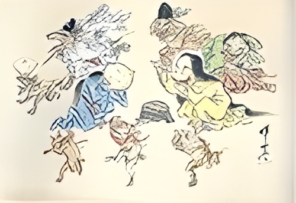

El Mito que Dio Vida a la Fiesta
Según el folclore japonés, recogido en textos medievales como el Shūgaishō y el Konjaku Monogatari, existen noches asociadas al zodiaco chino en las que cientos de yokai (espíritus y monstruos) abandonan sus escondites y desfilan por las calles humanas.
Se creía que cualquier mortal que osara mirar este desfile enfrentaría una maldición o sería "espiritado". La única protección era quedarse en casa en esas noches específicas o recitar un conjuro protector.
¿Quién lidera el desfile?
La procesión es tradicionalmente guiada por el misterioso Nurarihyon, el maestro de los yokai, acompañado de otros seres como el Nozuchi y el Otoroshi. Este evento ha sido un tema popular en el arte japonés durante siglos, inmortalizado en rollos ilustrados (emaki) desde el período Muromachi.

"En las noches del Buey, los demonios cabalgan por las calles. Quien lo vea, jamás volverá a ser el mismo."
Del Mito a la Celebración
Lo que una vez fue un temido presagio se ha transformado en una de las celebraciones más esperadas del otoño en Japón, especialmente en barrios tokiotas como Asakusa y Koenji. Hoy, el Hyakki Yagyo es un festival inclusivo y familiar donde los participantes se disfrazan de yokai para desfilar, bailar y celebrar juntos.
¿En qué consiste hoy?
Es la versión japonesa auténtica de Halloween, pero con una profundidad cultural única. Los asistentes visten disfraces increíblemente elaborados de personajes del folclore como Tengu, Kuchisake Onna, Kappa o Rokurokubi, creando un museo viviente de la rica mitología japonesa.
Una tradición en evolución
Ya conoces la leyenda. Ahora descubre cómo se celebra hoy.
Ir al festival